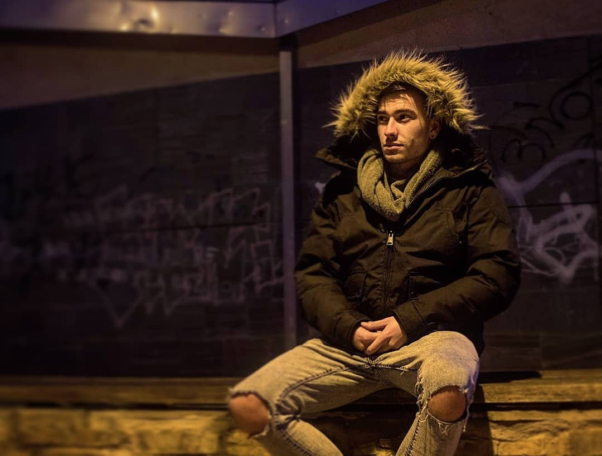

DJ Jesus, cuyo nombre real es Jesus Murciego Alonso, es una de las figuras más
prominentes en la escena de la música electrónica contemporánea. Nacido en Leon en 1997, Jesus se
sumergió
en el mundo de la música a una edad temprana, aprendiendo a tocar la bateria y la guitarra antes de
descubrir su verdadera pasión: la mezcla y producción de música electrónica. Inspirado por los sonidos
vibrantes y la energía de los clubes nocturnos europeos comenzó a crear su propio estilo distintivo.
DJ Jesus ha actuado en algunos de los festivales mas grandes a nivel regional, como Mono Loco,Los 40 dj
music y Arena Leon, consolidando su reputación como un maestro del entretenimiento y la mezcla musical.
Además de sus actuaciones en vivo, es un prolífico productor, trabajando constantemente en el estudio
para
innovar y expandir los límites de la música electrónica.
Con una presencia carismática y un talento innegable, DJ Jesus Murciego sigue siendo una fuerza
dominante en
la industria, inspirando a nuevas generaciones de DJs y productores mientras mantiene a sus fans
bailando
con cada nuevo lanzamiento.
Música
DJ Jesus es un talentoso creador de música, conocido por sus electrizantes mezclas que
fusionan ritmos innovadores y géneros diversos. Con una habilidad innata para leer a su audiencia, produce
sus propias pistas originales, llevando a los oyentes a un viaje sonoro inolvidable. Su estilo único y su
energía contagiosa en el escenario lo distinguen, capturando la esencia de la música electrónica moderna.
Cada actuación es una experiencia vibrante, donde las luces y los sonidos se sincronizan en perfecta
armonía. DJ Electrónica no solo pone música, la vive y la comparte, creando momentos mágicos en cada set.
Relacionados
Saray Murciego
Saray Murciego, hermana de Jesús, fue quien lo inspiró a adentrarse en el mundo de la
música. Esta talentosa artista ha sido parte de orquestas como Cañón y ha colaborado con otras destacadas
agrupaciones. Además, Saray cuenta con su propio grupo y compone sus propias canciones, ofreciendo también
actuaciones acústicas en solitario. Su versatilidad y pasión por la música han sido fundamentales en su
carrera, destacándose tanto en el ámbito de las orquestas como en sus proyectos personales. La influencia de
Saray en la vida de Jesús ha sido decisiva, motivándolo a seguir sus pasos y desarrollar su propio camino
musical
Festivales
Jesús ha ofrecido grandes conciertos y ha participado en importantes festivales tanto a
nivel regional como nacional. Entre ellos se destacan eventos en lugares emblemáticos como Monoloco, Arena
León y festivales organizados por Los 40 Principales DJ. Su presencia en estos escenarios ha consolidado su
reputación como un DJ talentoso y versátil, capaz de conectar con el público y crear experiencias musicales
inolvidables. Su participación en estos eventos no solo demuestra su habilidad y dedicación, sino que
también resalta su creciente influencia en la escena musical. Jesús continúa ganando reconocimiento y
seguidores en cada actuación.
Galería

X
Trayectoria
Batería orquesta San Marcos
Jesús comenzó su carrera como baterista en una orquesta regional llamada San Marcos,
conocida por sus animadas canciones de pachangueo y típica música de pueblo. En esta orquesta, Jesús
desarrolló su talento musical y adquirió experiencia en el escenario, tocando en diversas festividades
locales y eventos comunitarios. Su habilidad para mantener ritmos festivos y contagiosos fue fundamental
para el éxito de la orquesta. La música de San Marcos, alegre y tradicional, resonaba con el público y se
convirtió en parte esencial de las celebraciones del pueblo. Esta etapa inicial fue crucial en la
trayectoria musical de Jesús.
Grupo Saray Murciego
Jesus Murciego fue el bateria del grupo Saray Murciego, destacándose por su habilidad y
energía en el escenario. Su talento ha sido fundamental para definir el sonido de la banda, aportando ritmos
contundentes y precisos que complementan perfectamente el estilo musical del grupo. Saray no solo mantiene
el pulso de las canciones, sino que también añade dinamismo y fuerza a cada actuación. Su pasión por la
música y su dedicación se reflejan en cada golpe de batería, convirtiéndola en una pieza clave y muy
apreciada tanto por sus compañeros de banda como por los seguidores del grupo.
Dj en León
Jesús ha actuado como DJ en numerosos locales, incluyendo la Sala Oh, Santa Monica, y
Nox, entre muchas otras discotecas locales. Su experiencia en estos lugares le ha permitido desarrollar un
estilo único y conectar con una amplia variedad de públicos. A lo largo de su carrera, ha logrado destacarse
en la escena musical por su habilidad para crear atmósferas vibrantes y energéticas en cada presentación.
Cada actuación de Jesús se convierte en una experiencia memorable, consolidándolo como uno de los DJs más
solicitados en la escena nocturna de su región.
Eventos
DJ Jesus esta especializado en bodas y eventos sociales. Con más de 5 años de
experiencia, garantiza una atmósfera vibrante y llena de energía para cada celebración. Su repertorio
musical es extenso y variado, adaptándose a todos los gustos y edades. DJ Jesus ofrece servicios
personalizados, desde la selección musical hasta el manejo de la iluminación y el sonido, asegurando que
cada detalle esté perfectamente sincronizado. Con su profesionalismo y pasión por la música, convierte cada
evento en una experiencia inolvidable, creando recuerdos duraderos para los novios y sus invitados.